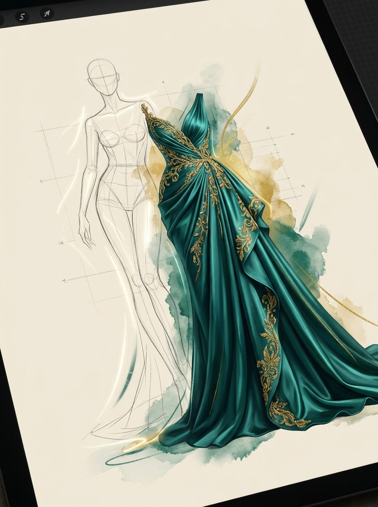
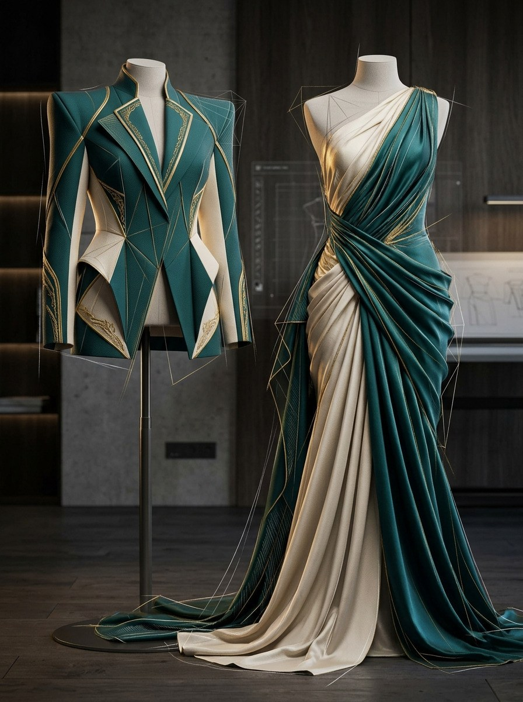
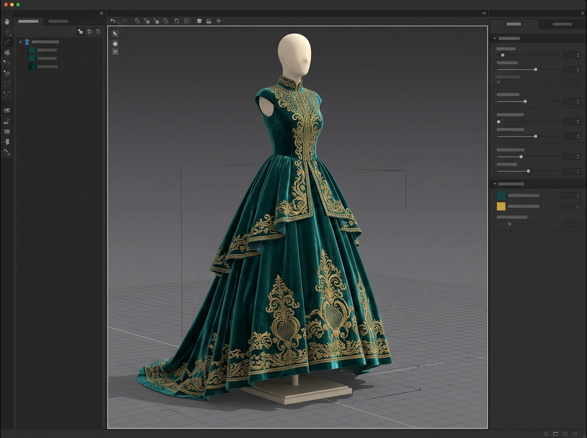
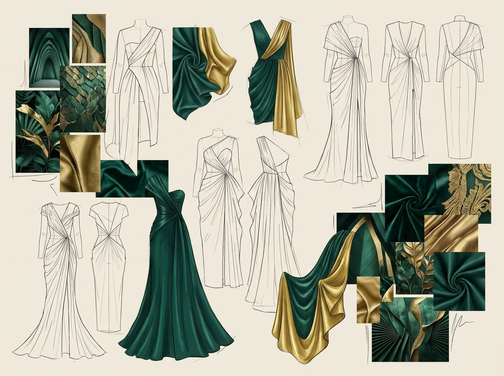
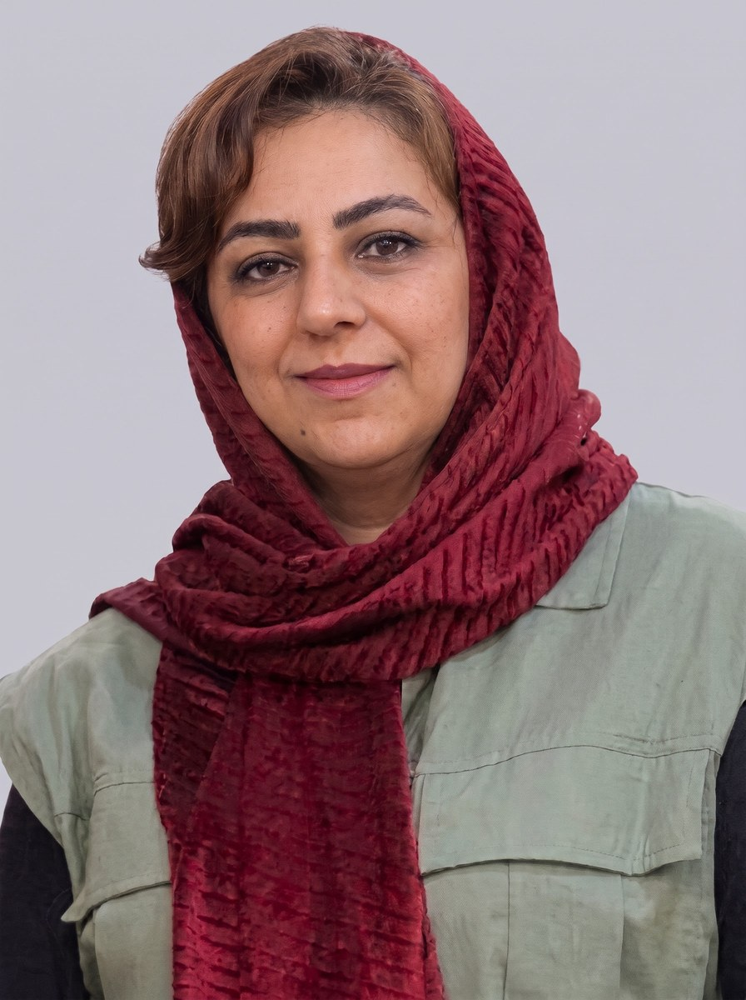
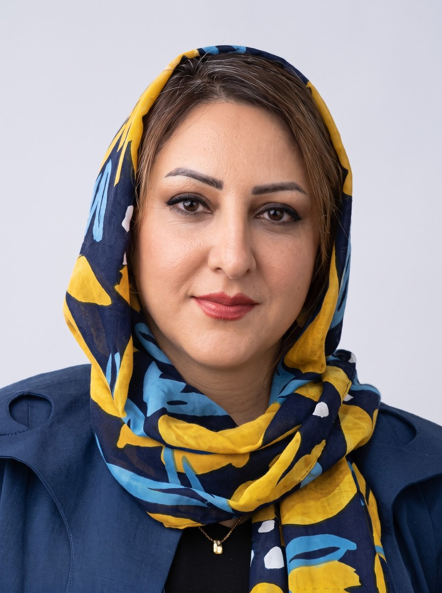

تلفیق دانش تخصصی مد، قلم دیجیتال و هوش مصنوعی
طراحی دیجیتال و هوش مصنوعی افقهای تازهای را برای تبدیل سریع و دقیق ایدههای ذهنی به آثار بصری پیش روی طراحان قرار دادهاند...
بازتعریف خلاقیت در دنیای مد، با قدرت فناوریهای دیجیتال.
ورود به سایت اصلی، دورههای آموزشی و ثبتنام (آکادمی شهرتاش)

طراحی دیجیتال و هوش مصنوعی افقهای تازهای را برای تبدیل سریع و دقیق ایدههای ذهنی به آثار بصری پیش روی طراحان قرار دادهاند...
پرورش نسل جدید طراحان لباس با آموزش تخصصی قلم نوری و هوش مصنوعی، همگام با استانداردهای جهانی...




رویکردی نوین برای کنترل دقیق خطوط، بافتها و سایهپردازی و خلق طرحهایی منسجم با کیفیت بصری بالا...
آمادهسازی سریع اتودها، شیتهای فنی، مودبردها و پورتفولیوهای حرفهای برای دانشگاهها و برندها...


حفظ آزادی حرکت دست با حساسیت فشار قلم، تنوع براشها و لایهبندی پیشرفته...
طراحی فیگور و آناتومی، ترسیم سیلوئت، پارچهسازی و نورپردازی حرفهای لباس...


تولید پیشنهادهای بصری متنوع با هوش مصنوعی در کنار شناخت فرم و زیباییشناسی طراح...
ابزارهای دیجیتال در خدمت تفکر خلاق برای ساخت آیندهای تازه در دنیای مد...



مهناز زکیپور مدیر عامل

شهرتاش رزمجو موسس و عضو هیئت مدیره
مهرتاش رزمجو مشاور امور قراردادها
باور ها همیشه با ایده های جدید در مد تغییر میکند